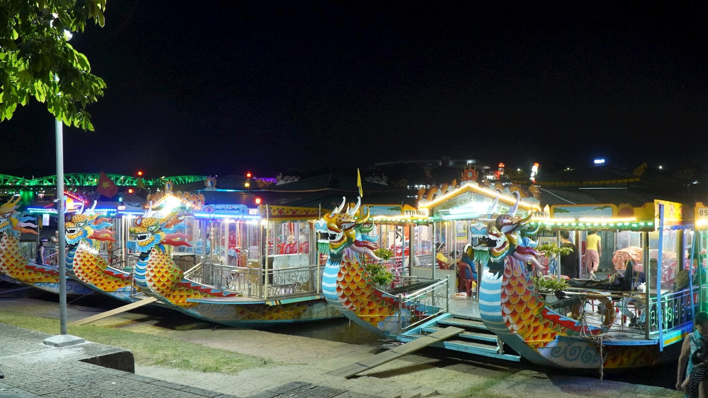
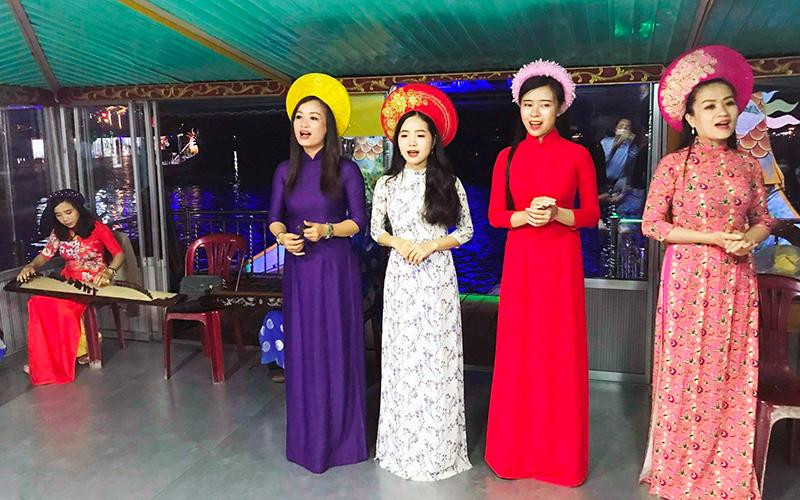
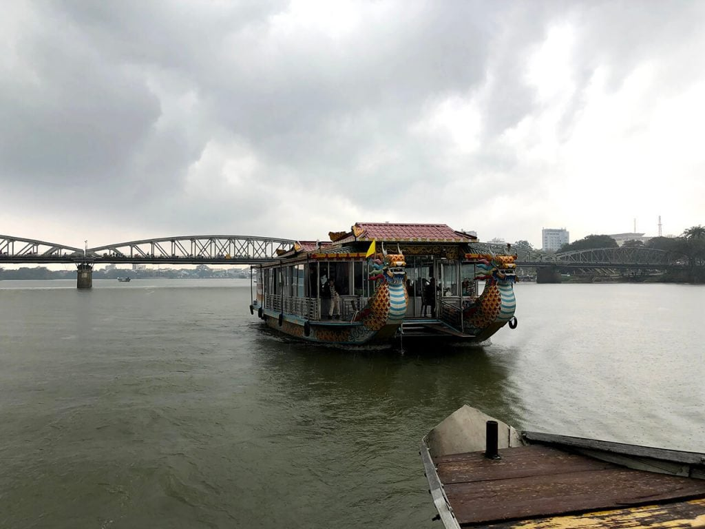
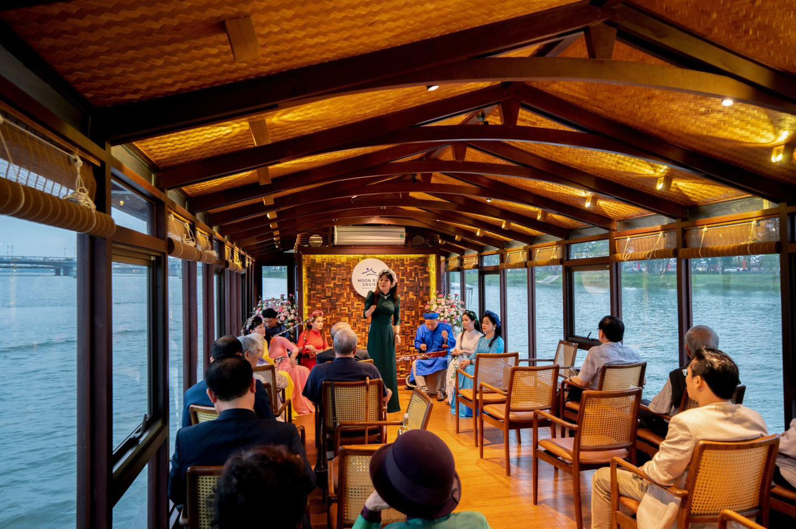
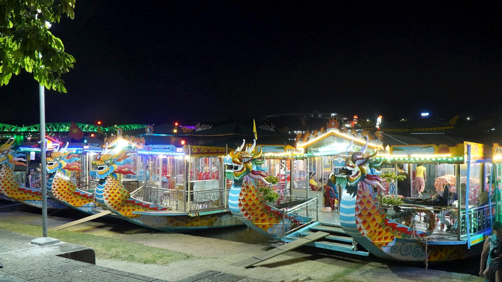
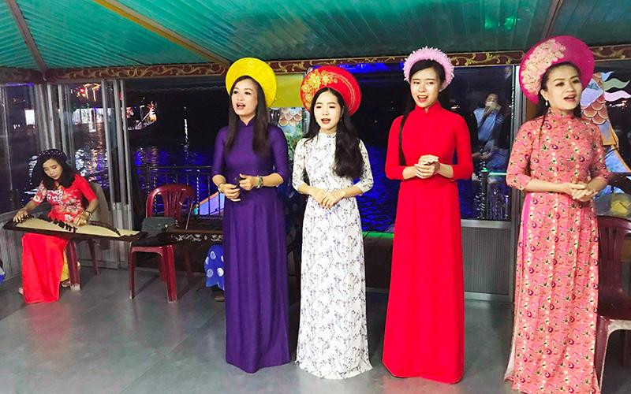
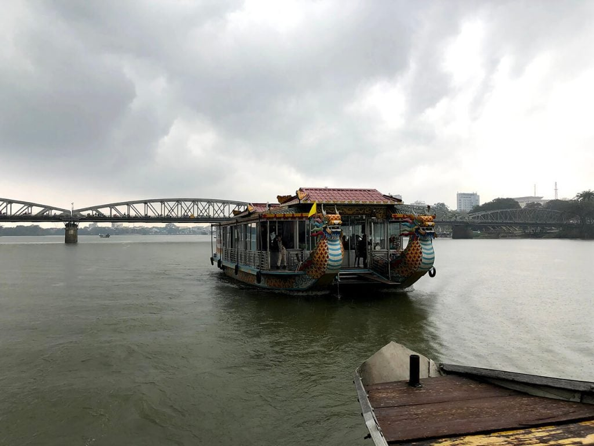
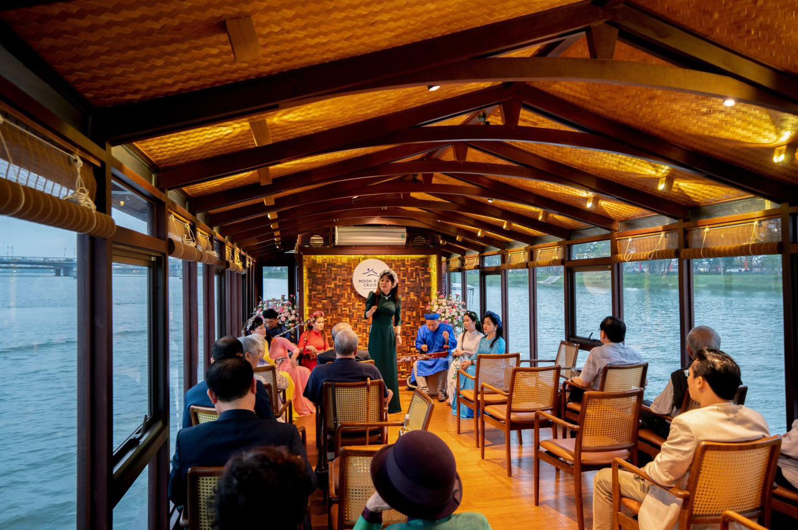

Dấu ấn Ca Huế: Khi âm nhạc trở thành di sản
Ca Huế – thể loại âm nhạc truyền thống kết tinh giữa nhã nhạc cung đình và dân ca bình dân – là một biểu tượng văn hóa tinh tế của vùng đất cố đô
 







1. Ca Huế – Giao thoa giữa cung đình và dân gian
Ca Huế là một loại hình nghệ thuật truyền thống đặc trưng của vùng đất cố đô, mang đậm dấu ấn của sự giao thoa giữa âm nhạc cung đình trang trọng và dân ca mộc mạc. Xuất phát từ nhạc cung đình triều Nguyễn và hòa quyện với âm hưởng dân gian miền Trung, Ca Huế vừa có tính bác học, tao nhã, vừa gần gũi, sâu lắng. Với hệ thống bài bản phong phú, sử dụng các nhạc cụ truyền thống như đàn tranh, đàn nguyệt, đàn nhị, sáo trúc…, Ca Huế không chỉ thể hiện tinh thần thẩm mỹ của tầng lớp quý tộc mà còn là tiếng lòng, tâm tình của người dân xứ Huế. Chính sự hòa quyện độc đáo này đã làm nên nét riêng biệt, thanh cao và sâu lắng cho Ca Huế – một di sản văn hóa phi vật thể đặc sắc của Việt Nam.
2. Trình diễn trên sông Hương – Không gian nghệ thuật trữ tình
Không gian sông Hương thơ mộng là nơi Ca Huế thăng hoa và lan tỏa trọn vẹn nhất. Trên những chiếc thuyền rồng lững lờ trôi, tiếng đàn, tiếng hát hòa quyện với tiếng nước và gió tạo nên một khung cảnh nên thơ, sâu lắng. Đêm xuống, ánh đèn vàng nhè nhẹ soi bóng các nghệ sĩ áo dài truyền thống, đưa người nghe vào một thế giới nghệ thuật trữ tình đầy chất Huế. Đây không chỉ là buổi trình diễn âm nhạc, mà là trải nghiệm văn hóa độc đáo không nơi nào có được.

3. Người nghệ sĩ – Linh hồn của ca khúc
Mỗi tiết mục Ca Huế đều mang dấu ấn riêng biệt của người nghệ sĩ thể hiện. Họ không chỉ là người hát, mà còn là người kể chuyện, truyền cảm xúc, giữ gìn và lan tỏa hồn cốt dân tộc qua từng câu hát, từng ánh mắt, từng động tác uyển chuyển. Với giọng hát nội lực nhưng dịu dàng, với tâm huyết dành cho nghệ thuật truyền thống, họ chính là linh hồn sống của mỗi bản ca.
4. Nhạc cụ và trang phục – Bản sắc không thể thiếu
Nhạc cụ truyền thống là yếu tố không thể tách rời của Ca Huế. Các loại đàn tranh, đàn nguyệt, đàn nhị, sáo trúc, tỳ bà… mỗi nhạc cụ mang một sắc thái âm thanh riêng, góp phần tạo nên chiều sâu cho giai điệu. Bên cạnh đó, trang phục của nghệ sĩ – thường là áo dài truyền thống nền nã, tinh tế – cũng thể hiện tính trang trọng, thanh lịch và bản sắc văn hóa của vùng đất cố đô.
5. Hành trình cảm xúc cùng Ca Huế
Nghe Ca Huế là một hành trình cảm xúc, dẫn dắt người nghe đi qua những cung bậc buồn – vui – trầm – bổng của cuộc sống và tâm hồn người Việt. Đó là lúc người ta thả mình vào không gian tĩnh lặng, để lắng nghe những lời ca chan chứa tình quê, nỗi nhớ, nỗi niềm. Ca Huế không chỉ là âm nhạc – đó là dòng chảy của ký ức, của văn hóa và của tình người xứ Huế.
© 2025 Team CodeX. All Rights Reserved.